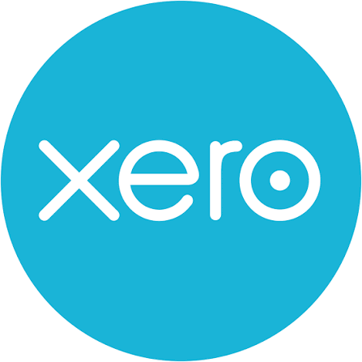
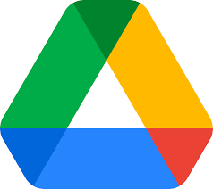

Accounting Platforms
- QuickBooks Online & Xero.
- Cloud ecosystem management.
- Bank rule automation & data feeds.


I am a virtual bookkeeper focused on bringing clarity, accuracy, and order to your business finances. By leveraging cloud tools like QuickBooks and Xero, I manage the numbers so you can focus entirely on growing your business. Let's get your books tax-ready and perfectly organized.
Professional Platforms:
Email address: joeldanvenalon@gmail.com
UpWork profile: Click to view profile
LinkedIn profile: Click to view profile